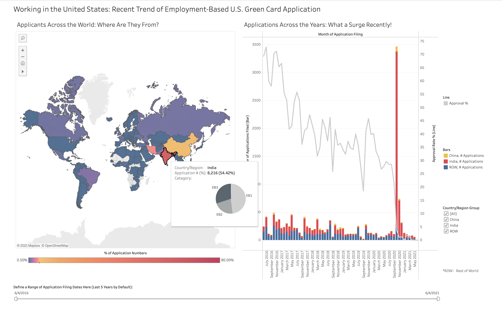
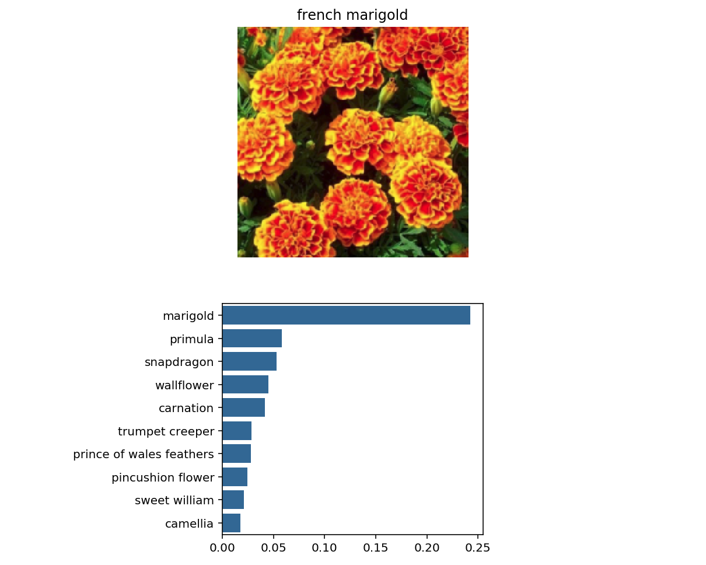

• • • About Me • • •
Skills
Certifications
Background
I am a scientist with more then 10 years of experience in scientific research. I majored in Bioinformatics, Computer Science, and Cancer Genetics, and also obtained great expertise in Statistics. As a researcher, I ask important and unaddressed questions, and tackle the most challenging problems by computationally exploring and analyzing large set of biomedical data generated by our own experiments or obtained from publically available dataset. I have made novel discoveries about human diseases and published more than 20 peer-reviewed articles. In addition, I give frequent presentations at professional conferences and seminars to tell the stories of our findings behind the data.
I am passionate about applying my data science and computater science skills in real-world setttings, to solve complicated problems or build products.
Recent Projects
Data Visualization for Employment-Based U.S. Green Card Application
July 2021
- Scraped more than 50,000 data points of visa application shared by users at the Trackitt website.
- Gathered and wrangled data using Python selenium webdriver and Python pandas.
- Created interactive visualization using Tableau.
- Created narrative visualization using HTML, Javascript, D3.js, and CSS.
- Link to Tableau-based interactive data visualization
- Link to D3.js-based narrative and interactive visualization
Deep Learning-Based Image Classifier
June 2020
- Trained a neural network using the PyTorch platform to recognize 102 different species of flowers.
- Used a public dataset containing more than 6000 images of flowers for training.
- Performed transfer learning based on a pretrained VGG neural network model.
- Achieved an accuracy rate of around 80% from the test set.
- Link to Github repository
• • • Selected Projects • • •
Data Science and Machine Learning
Matrix Factorization MovieLens Recommendation System
Dec 2019
- Constructed a movie recommendation system based on the "MovieLens" dataset.
- The dataset contains 10 million ratings and 100,000 tag applications applied to 10,000 movies by 72,000 users.
- Utilized matrix factorization technique and achieved a RMSE as low as 0.786.
- Link to Report
Single Cell RNA-Sequencing Analysis
Jan 2020
- Analyzed a public dataset of single cell RNA-sequencing study for human cord blood mononuclear cells.
- Performed single-cell analysis on 36,000 genes and 13 protein for 8,000 cells.
- Used PCA, t-SNE and UMAP for dimensional reduction and visualization, and KNN graph for clustering.
- Link to Report
Gene Splicing Site Prediction
Jan 2008
- Compared machine learning models for gene splicing prediction using 2,300 positive and 50,000 negative samples.
- Built support vector machine (SVM), artificial neural networks (ANN) and Bayesian network (BN) models.
- Evaluated these models using sensitivity and specificity values estimated from cross-validation.
Simulation and Statistical Modeling
Simulation Study of Statistical Power in Linear Regression
June 2021
- Built a simulation of a simple linear regression model for 1000 times and extract the parameters of the significance of the regression test.
- Compared the power curves of different sample size, noise level and signal strength.
- Analyzed the robustness of the simulation by comparing the emperical mean of the coefficient with the theoretical one.
- Explained and demonstrated the influences of different variables on power curves.
- Link to Report
Brain Cancer Prognosis Analysis
Sep 2014
- Collected and organized clinical data of 209 Chinese glioblastoma patients.
- Performed analyses on the REMBRANDT brain cancer cohort (N = 371) and TCGA dataset (N = 528).
- Analyzed the expression levels of over 20,000 genes and their association with patient survival using Kaplan-Meier and Cox Proportional Hazards Regression.
- Identified potential biomarker and oncogenic genes in human gliomas.
- Link to Publication
Multiple Linear Regression Models for Survival Analysis
Aug 2021
- Trained multiple linear regression models to predict breast cancer patient survival time using the SEER dataset.
- There are 15 variables and more than 4000 samples.
- Trained a small and meaningful model by reducing parameters using model building techniques, and including interaction terms.
- Utalized diagnostic tools to check model assumptions.
- Link to Report
Software Engineering
A* Route Planner
Apr 2020
- Built a route planner to calculate the shortest path between two points on a map
- Implemented the A* algorithm that finds the shortest length path while expanding minimum number of possible paths
- Used a heuristic function that estimates the distance to the goal for the optimization
- Link to Repository
Genetic Variation Calling and Annotation
Jul 2021
- Build a pipeline to call out genetic deletion or duplication from 10,000 samples based on NGS reads
- Extracted effects of genetic variation using ExAC API for 7000 different variation sites
- Developed an algorithm to annotate the most deleterious effect of each variation
- Link to Repository
Image Transformation
Aug 2020
- Built a image transformation program to showcase the use of C++ Object-Oriented Programming
- Created a C++ class that represents a colored pixel and a PNG image class that encapsulates the loading and saving of image files
- Implemented image transformation functions such as grayscale, illinify, spotlight, and watermark
- Link to Repository
• • • Work Experience • • •

University of California, San Francisco
Specialist (Research Scientist) | San Francisco, CA | Oct 2020 - Present
- Collaborating with industrial partner on cancer drug discovery (currently in Phase 1 clinical trial).
- Investigating the efficacy and mechanism of this novel compound in drug resistant breast cancer models.
- Analyzing high-throughput ribosome profiling RNA-seq data (“translatome”) to identify molecular targets of drugs.
- Computationally modeling cancer drug response using Omics data and deep learning strategies.
- Performing high content imaging-based cell proliferation and apoptosis analysis.

Highside Capital Management (HCM) BIO
Research Analyst | Dallas, TX | Apr 2020 - Oct 2020
- Performed research and analysis for the oncology drug discovery diligence.
- Helped making financial investment decision for startup biotech companies.
University of Texas Southwestern Medical Center
Post-Doctoral Research Scholar | Dallas, TX | Aug 2015 - Oct 2020
- Identified novel cancer targets by high-throughput metabolomics and proteomics analysis.
- Performed image analysis for protein-protein interaction by immunofluorescence and confocal microscope.
- Analyzed the involvement of critical cancer regulators in patient clinical outcome.
- Published 7 papers (including 4 first-author papers).
Teaching Assistant, Intro to Biostatistics & Bioinformatics | Jan 2019 - May 2019
- Helped with statistics coding assignments for 67 graduate students.
- Assisted the professor with teaching materials and exam grading.
Co-Chair, Postdoctoral Association Career Development Committee | Oct 2019 - Oct 2019
- Organized career development events for UTSW postdocs, e.g. the “Conflict Management and Collaboration” panel discussion.

Fudan University
Graduate Research Assistant | Shanghai, China | Sep 2008 - Jan 2015
- Identified prognosis prediction biomarkers for human brain cancer by comprehensive analysis of patient clinical data.
- Conducted a case-control association study of genetic risk predictors for brain cancer in Chinese population.
- Built a gene regulation network in prostate cancer based on high-throughput microarray and ChIP-seq.
- Published 14 research papers (including 9 first- or co-first-author papers).